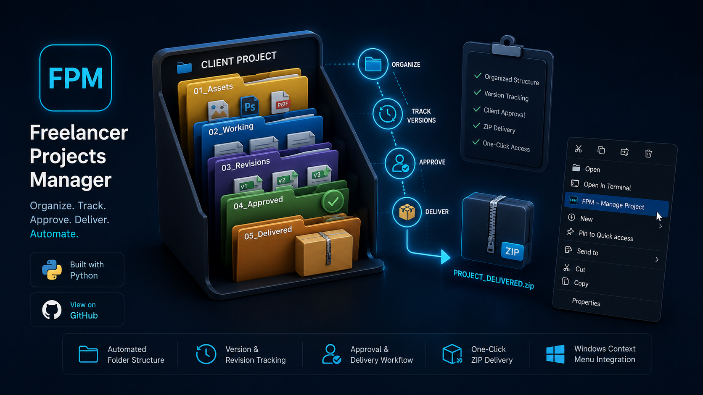

Freelancer Projects Manager — FPM
Desktop Automation & Workflow Tool
Problem
Freelancers lose significant billable time manually creating client directories, mismanaging revisions and version confusion, and manually compiling delivery packages for every project.
Solution
A standalone Python desktop application that automatically scaffolds standardized client folder hierarchies, tracks version revisions, and packages completed client files into a clean ZIP bundle with one click.
Result & Impact
Eliminated manual folder setup entirely, removed risk of delivering wrong file versions, and cut project packaging time from 15 minutes down to a single click.
Core Capabilities:
- Automated project folder & directory structure creation
- Systematic version management & revision tracking
- One-click automated ZIP package generation for client delivery
- Windows context-menu integration for instant access
Python
OOP
File Automation
PyInstaller